library(YouAnalyser)
#>
#> ── Welcome to YouAnalyser! ─────────────────────────────────────────────────────
#> ✔ Package loaded successfully!
#> Type `?YouAnalyser` to see the documentation.
#> Visit the package's website for more information:
#> <https://eguizarrosales.github.io/YouAnalyser/>
library(haven)1. Recommended Workflow
The following minimal and basic workflow is recommended for
performing Key Driver Analysis (KDA) using the YouAnalyser
package. This workflow includes the following steps:
- Exploratory Data Analysis (EDA)
- Key Driver Analysis (KDA)
- Visualize and interpret the results
It is assumed that the data is already in a
haven::labelled() format. If your data is not in this
format, you may need to perform some data processing steps to convert it
before using the code below. For an example of how to do this, please
refer to the vignette("dp", package = "YouAnalyser")
vignette on Data Processing.
Use the following command to create and open a new R project with a suitable folder structure for your KDA:
# Step 1: Create a new project with a suitable folder structure for your KDA analysis:
ya_setup_folder_structure(
folder_name = "myKDAProject", # Chose a name for your project folder (no spaces or special characters)
base_path = tcltk::tk_choose.dir(), # Choose the path interactively. You can also specify a path directly as a string, e.g. "C:/Users/YourAbbreviation/Downloads/"
template = "kda", # Use the KDA template, which creates a folder structure suitable for KDA analyses
make_rproj = TRUE, # Create an R project file in the main folder of your project
)In your newly opened project, open the file
./scripts/kda.R (as instructed in the console output):
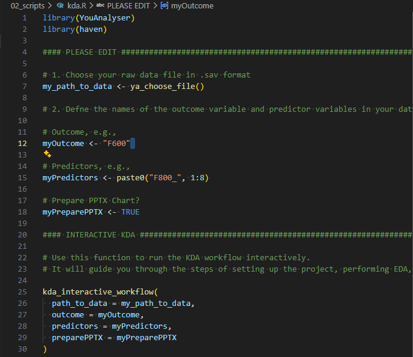
kda.R fileThen follow these steps:
- Select (using your mouse) and run (
Ctrl + Enter) the first two lines of code to load the necessary libraries. - Edit lines 12, 15, and 18 to specify the variable names of the outcome, the predictors, and whether want to prepare a PPTX report, respectively.
- Select and run lines 7 to 18. A file explorer window will open. Navigate to the folder where your SPSS data is located, select the file, and click “Open”.
- Select and run lines 25 to 30 to conduct a KDA in an interactive way. Check your console and follow the instructions.
For the remainder of this vignette, we will focus on the different
options for conducting the KDA with more control over the analysis. Keep
in mind that you should always conduct an EDA before continuing with a
KDA (this is taken care of by the steps above). For a more detailed
walkthrough of the EDA step, please refer to the
vignette("eda", package = "YouAnalyser") vignette on
Exploratory Data Analysis.
2. The kda_regression() Function
The kda_regression() function is the main work horse for
conducting KDA. It is a wrapper function for all the necessary steps
(subfunctions) to conduct a KDA, including fitting a regression model,
calculating variable importance and performance measures, and creating
the relevant plots. The function has several arguments that allow you to
customize the analysis, such as the choice of regression model, variable
importance method, and diagnostic options. You can get help on the
function and its arguments by running
help("kda_regression") or ?kda_regression in
your R console.
You need to provide at least the following arguments to the
kda_regression() function:
- Option 1:
data,outcome, andpredictors-
data: A data frame containing the outcome and predictors. The data needs to be in ahaven::labelled()format, as is typically the case for SPSS data. If it is not, refer to thevignette("dp", package = "YouAnalyser")vignette on Data Processing for how to convert your data into a labelled format. -
outcome: A single string naming the outcome variable. -
predictors: A character vector of predictor variable names. You can use e.g.paste0("F800_", 1:8)to specify a sequence of variables with similar names.
-
- Option 2:
model: Instead of providing thedata,outcome, andpredictorsarguments, you can also directly provide a fitted regression model object fromlm()orglm()to themodelargument (intended for advanced users.)
The kda_regression() function also has several other
options. These have recommended default values and do not need to be
changed in most cases:
-
diagnostics = FALSE: A logical indicating whether to compute model diagnostics. This is not necessary for the KDA itself, but can be useful for checking the assumptions of the regression model. If set toTRUE, diagnostic plots will be included in the output. -
importance_method = "auto": The method to calculate variable importance. The default “auto” will conduct a dominance analysis if the number of predictors is less than 15. Otherwise, it will use the “jrw” method, which is a computationally efficient method for calculating variable importance in larger models. See below for more information on the available variable importance methods. -
importance_barPlots_args = list(): A list of additional arguments passed to the importance bar plot function. Seekda_importance_barPlot()for details. -
performance_barPlot_args = list(): A list of additional arguments passed to the performance bar plot function. Seekda_performance_barPlot()for details. -
ipma_scatterPlot_args = list(): A list of additional arguments passed to the IPMA scatter plot function. Seekda_ipma_scatterPlot()for details.
Regarding the _args arguments, you can use these to
customize the appearance of the plots. For example, you can change the
default color of the performance_barPlot from YouGov Red 1 to Teal 1
like this:
performance_barPlot_args = list(color = yougov_colors[["Teal 1"]]).
For more information on the available arguments, please refer to the
documentation of the respective plotting functions
?kda_importance_barPlot(),
?kda_performance_barPlot(), and
?kda_ipma_scatterPlot().
2.1 Example Usage of kda_regression()
We will use the bkw_processed dataset, a synthetically
generated dataset based on the structure of real study (call
?bkw_processed for more information). We want to predict
the outcome variable F600 (BKW employer attractiveness)
using the 14 predictor variables F800_1 to
F800_14 (various aspects of factors thought to affect
employer attractiveness). We will use JRW method to save compute time.
We will also set diagnostics = TRUE to include diagnostic
plots in the output. Finally, we do not want to show variable labels in
the final plot, so we will set show_labels = FALSE in the
ipma_scatterPlot_args argument.
kda <- kda_regression(
data = bkw_processed,
outcome = "F600",
predictors = paste0("F800_", 1:14),
importance_method = "jrw",
diagnostics = TRUE,
ipma_scatterPlot_args = list(
show_labels = FALSE
)
)We can access the IPMA plot using:
kda$plots$ipma_scatterPlot$p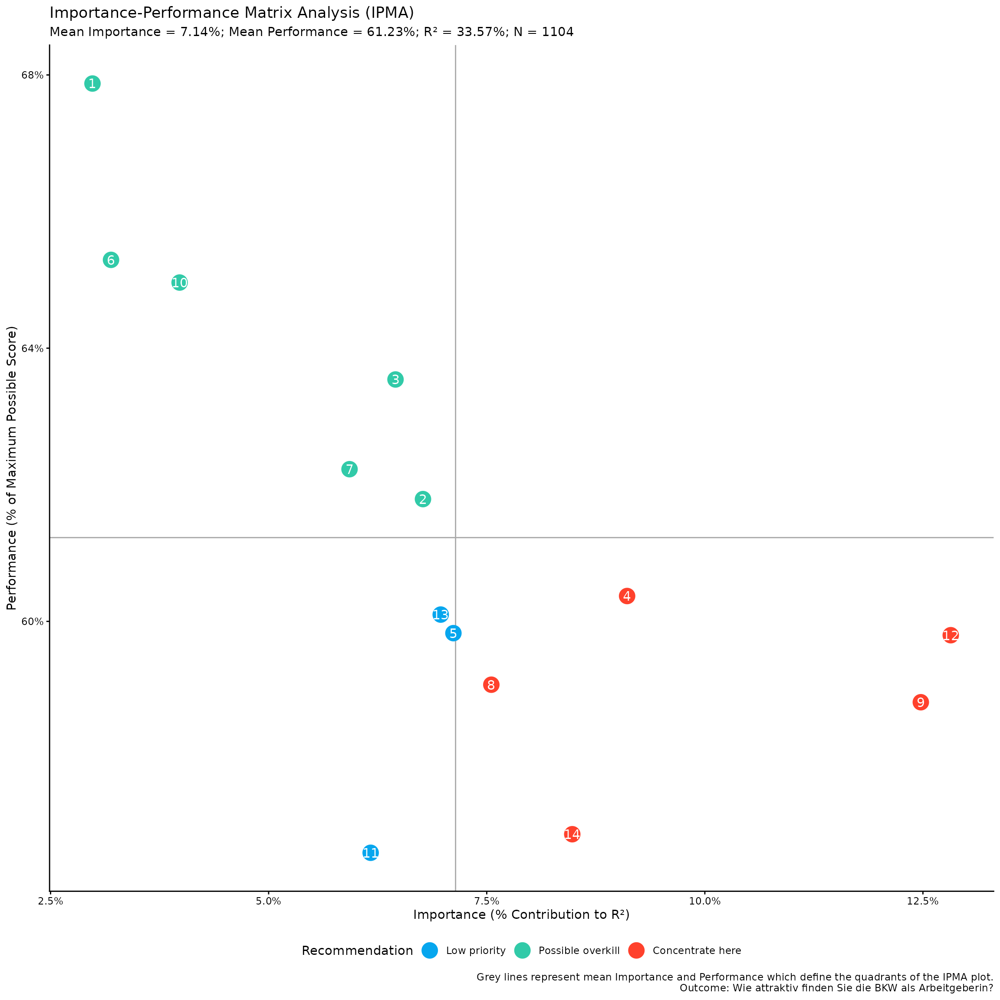
This is a ggplot object, so you can further customize it
using ggplot2 functions. For example, to apply the
ggplot2::theme_bw() theme, keep the legend at the bottom,
don’t show major and minor grids, remove the x- and y-axis ticks,
labels, and titles, you can do:
my_ipma_plot <- kda$plots$ipma_scatterPlot$p +
ggplot2::theme_bw() +
ggplot2::theme(
legend.position = "bottom",
panel.grid.major = ggplot2::element_blank(),
panel.grid.minor = ggplot2::element_blank(),
axis.ticks = ggplot2::element_blank(),
axis.text = ggplot2::element_blank(),
axis.title = ggplot2::element_blank()
)
print(my_ipma_plot)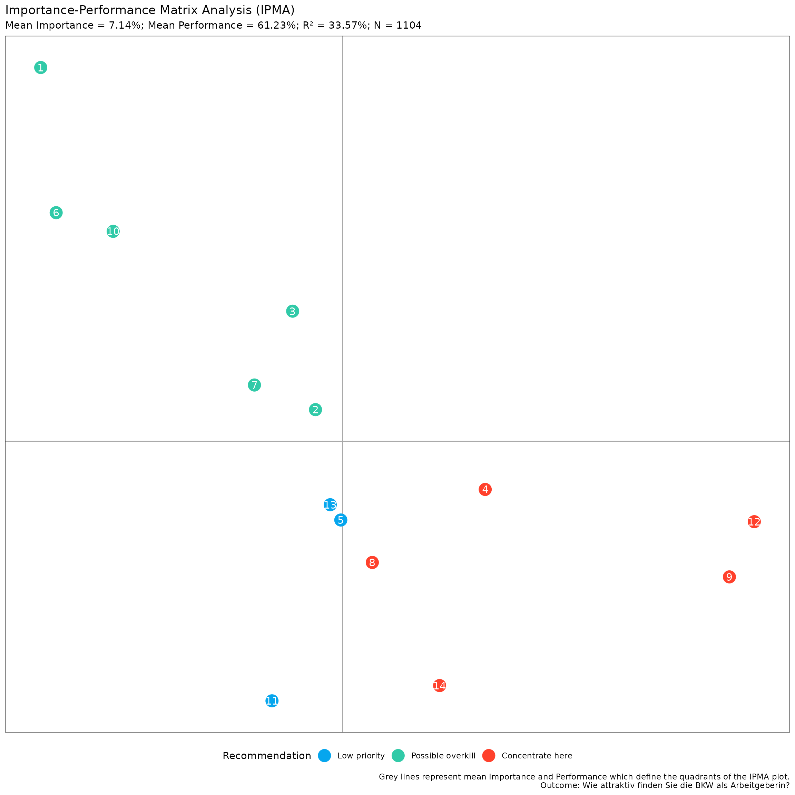
You can save this plot using the convenience function
YouAnalyser::ya_save_plot(). This function allows you to
save a plot to a specified file path, with options to set the width and
height (in centimeters) of the saved plot. If you want to choose the
file path interactively, you can use the
YouAnalyser::ya_choose_file_path() function, which will
open a dialog box that allows you to choose a directory where you would
like to save the plot. You only need to additionally provide a file name
("ipma_plot.jpeg" in the example below), and the function
will take care of the rest.
file_path <- ya_choose_file_path("ipma_plot.jpeg")
ya_save_plot(
plot = my_ipma_plot,
file_path = file_path,
width = 30,
height = 20
)If you saved all the plots generated by our call to
kda_regression() above, these would look like this:
kda$plots$diagnostics_correlation
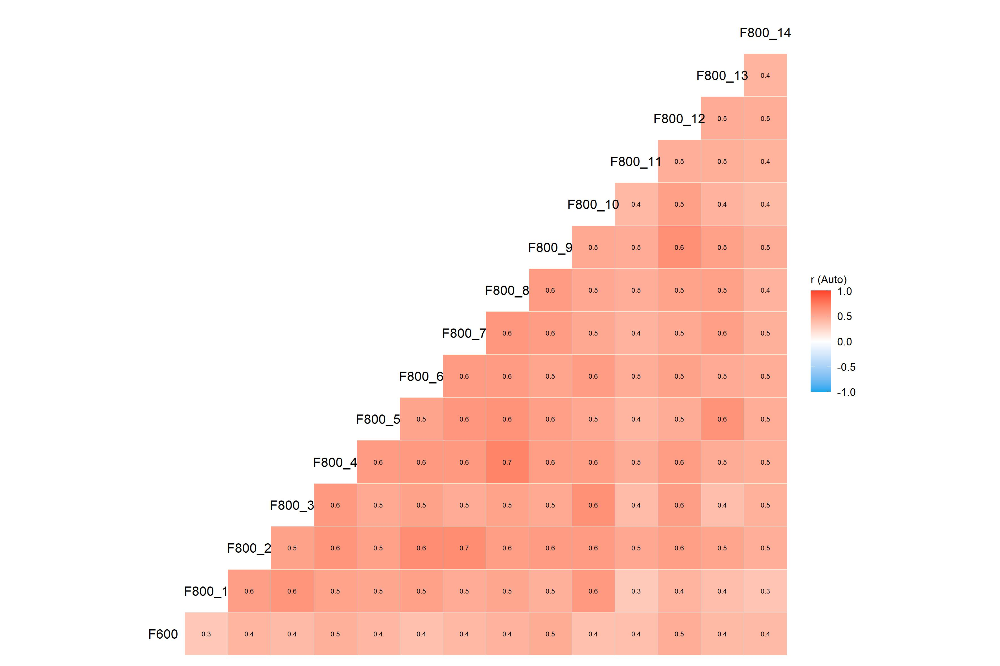
kda$plots$diagnostics_model
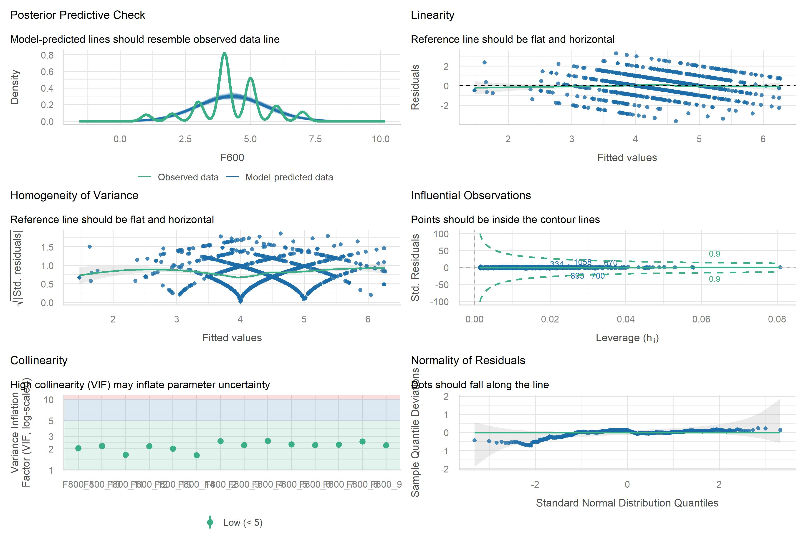
kda$plots$model_forestPlot

kda$plots$importance_barPlot
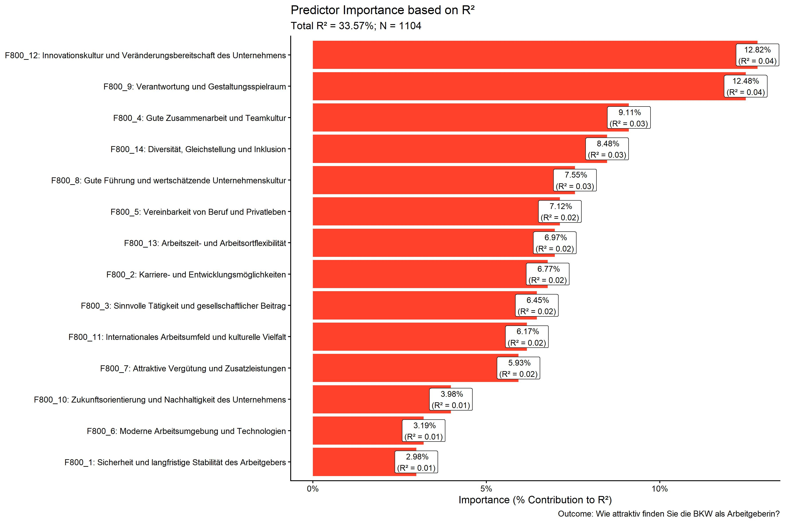
kda$plots$performance_barPlot

There are a lot of additional outputs saved in the kda
object, such as the fitted regression model, variable importance and
performance measures, and diagnostic plots. Try accessing these
interactively by typing kda$ in your console and using
tab-completion to see the available elements.
2.2 KDA with Binary Outcomes
It is also possible to conduct a KDA with a binary outcome variable
using the kda_regression() function, which automatically
detects the type of the outcome variable and fits a logistic regression
model if the outcome is binary. The interpretation of the results are
very similar to a KDA with a continuous outcome.
Let’s have a look at the example data with a binary outcome variable (“F600”) and the first three predictor variables (“F800_1” to “F800_3”):
eda_summary(
data = bkw_bin_outcome,
variables = c("F600", paste0("F800_", 1:3)),
browser_output = FALSE
)
#> Warning: no DISPLAY variable so Tk is not available
#> Warning in png(png_loc <- tempfile(fileext = ".png"), width = 150 *
#> graph.magnif, : unable to open connection to X11 display ''
#> Warning in png(png_loc <- tempfile(fileext = ".png"), width = 150 *
#> graph.magnif, : unable to open connection to X11 display ''
#> Warning in png(png_loc <- tempfile(fileext = ".png"), width = 150 *
#> graph.magnif, : unable to open connection to X11 display ''
#> Warning in png(png_loc <- tempfile(fileext = ".png"), width = 150 *
#> graph.magnif, : unable to open connection to X11 display ''
#>
#> ── Data Frame Summary
#> Data Frame Summary
#> data
#> Dimensions: 1104 x 4
#> Duplicates: 908
#>
#> --------------------------------------------------------------------------------------------------------------------------------------------------------
#> Variable Label Stats / Values Freqs (% of Valid) Graph Valid Missing
#> ------------------ ----------------------------------------- ------------------------------ -------------------- ------------------ ---------- ---------
#> F600 Wie attraktiv finden Sie die BKW als 1. [0] Nicht attraktiv 218 (19.7%) III 1104 0
#> [haven_labelled, Arbeitgeberin? 2. [1] Attraktiv 886 (80.3%) IIIIIIIIIIIIIIII (100.0%) (0.0%)
#> vctrs_vctr,
#> double]
#>
#> F800_1 Sicherheit und langfristige Stabilität 1. [1] Überhaupt nicht gut 11 ( 1.0%) 1104 0
#> [haven_labelled, des Arbeitgebers 2. [2] 2 21 ( 1.9%) (100.0%) (0.0%)
#> vctrs_vctr, 3. [3] 3 65 ( 5.9%) I
#> double] 4. [4] 4 295 (26.7%) IIIII
#> 5. [5] 5 256 (23.2%) IIII
#> 6. [6] 6 300 (27.2%) IIIII
#> 7. [7] Sehr gut 7 156 (14.1%) II
#>
#> F800_2 Karriere- und Entwicklungsmöglichkeiten 1. [1] Überhaupt nicht gut 11 ( 1.0%) 1104 0
#> [haven_labelled, 2. [2] 2 33 ( 3.0%) (100.0%) (0.0%)
#> vctrs_vctr, 3. [3] 3 69 ( 6.2%) I
#> double] 4. [4] 4 405 (36.7%) IIIIIII
#> 5. [5] 5 300 (27.2%) IIIII
#> 6. [6] 6 209 (18.9%) III
#> 7. [7] Sehr gut 7 77 ( 7.0%) I
#>
#> F800_3 Sinnvolle Tätigkeit und 1. [1] Überhaupt nicht gut 12 ( 1.1%) 1104 0
#> [haven_labelled, gesellschaftlicher Beitrag 2. [2] 2 27 ( 2.4%) (100.0%) (0.0%)
#> vctrs_vctr, 3. [3] 3 87 ( 7.9%) I
#> double] 4. [4] 4 348 (31.5%) IIIIII
#> 5. [5] 5 289 (26.2%) IIIII
#> 6. [6] 6 238 (21.6%) IIII
#> 7. [7] Sehr gut 7 103 ( 9.3%) I
#> --------------------------------------------------------------------------------------------------------------------------------------------------------
#>
#> ── Descriptive Statistics
#> Variable | Mean | SD | Range | Quartiles | Skewness | Kurtosis | n | n_Missing
#> -------------------------------------------------------------------------------------------
#> F600 | 0.80 | 0.40 | [0.00, 1.00] | 1.00, 1.00 | -1.52 | 0.32 | 1104 | 0
#> F800_1 | 5.07 | 1.29 | [1.00, 7.00] | 4.00, 6.00 | -0.40 | -0.10 | 1104 | 0
#> F800_2 | 4.71 | 1.20 | [1.00, 7.00] | 4.00, 6.00 | -0.17 | 0.23 | 1104 | 0
#> F800_3 | 4.81 | 1.26 | [1.00, 7.00] | 4.00, 6.00 | -0.22 | -0.03 | 1104 | 0We can run the KDA with the binary outcome variable in the same way as before, just with a different dataset. Note that estimating a KDA for a binary outcome variable can take a bit longer than for a continuous outcome variable, especially if you have many predictors, because logistic regression models are more computationally intensive to fit than linear regression models. This is especially the case if you use the “domir” method for calculating variable importance, which is why we will use the “jrw” method in this example.
kda_bin <- kda_regression(
data = bkw_bin_outcome,
outcome = "F600",
predictors = paste0("F800_", 1:14),
importance_method = "jrw",
diagnostics = TRUE
)
#> Cannot simulate residuals for models of class `glm`. Please try
#> `check_model(..., residual_type = "normal")` instead.We get essentially the same plots as for the KDA with the continuous outcome variable. Some differences include:
-
kda_bin$plots$diagnostics_modelis adjusted for the logistic regression model, so it shows different diagnostic plots than the linear regression model. (See Model Diagnostics section below for more information on how to interpret these plots.) - The
kda_bin$plots$model_forestPlotnow shows the Log-Odds. Negative Log-Odds indicate that higher values of the predictor are associated with lower probabilities of the outcome being 1 (i.e., the event of interest), while positive Log-Odds indicate that higher values of the predictor are associated with higher probabilities of the outcome being 1. The further away from zero, the stronger the association between the predictor and the outcome. -
values in the
kda_bin$plots$importance_barPlot,kda_bin$plots$performance_barPlot, andkda_bin$plots$ipma_scatterPlotnow refer to , which is a pseudo- measure that is commonly used for logistic regression models. The same rules for interpretation apply as for the values in the KDA with a continuous outcome variable.
kda_bin$plots$diagnostics_correlation
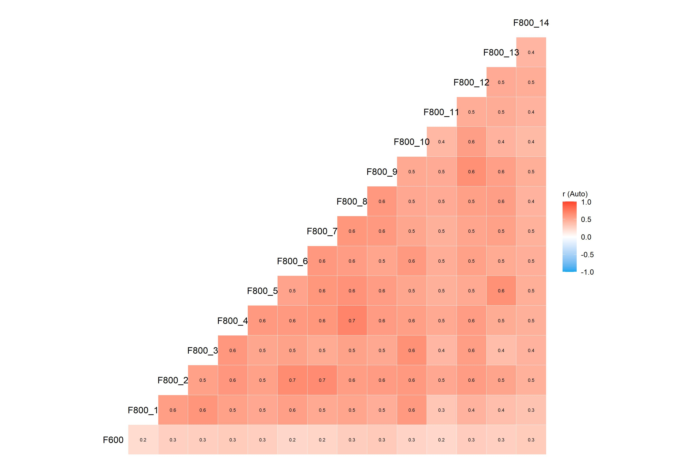
kda_bin$plots$diagnostics_model
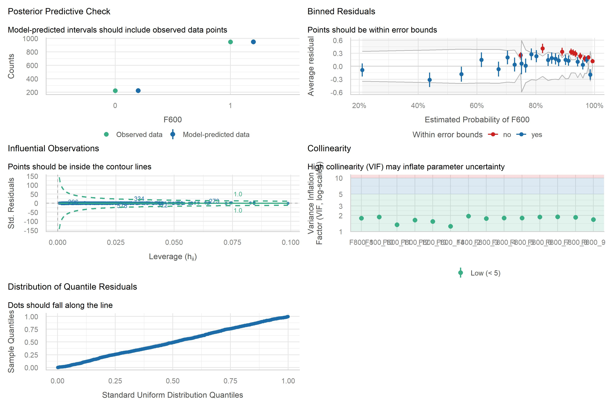
kda_bin$plots$model_forestPlot
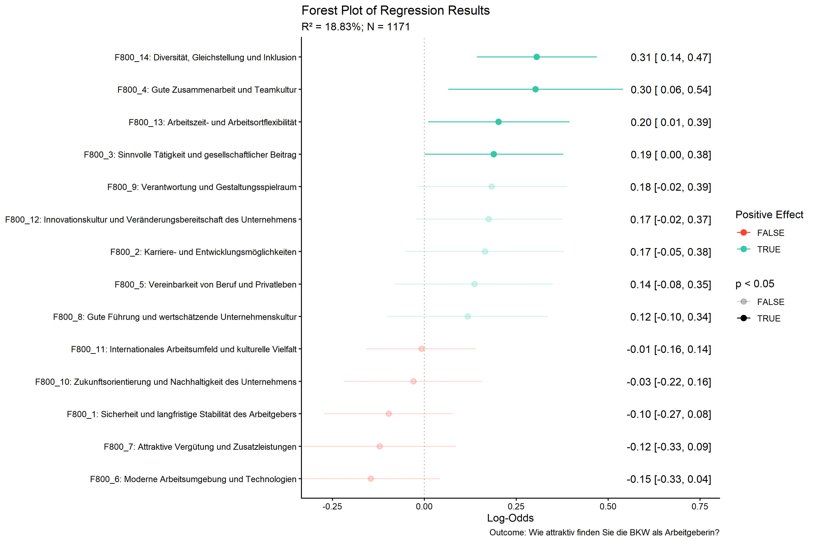
kda_bin$plots$importance_barPlot
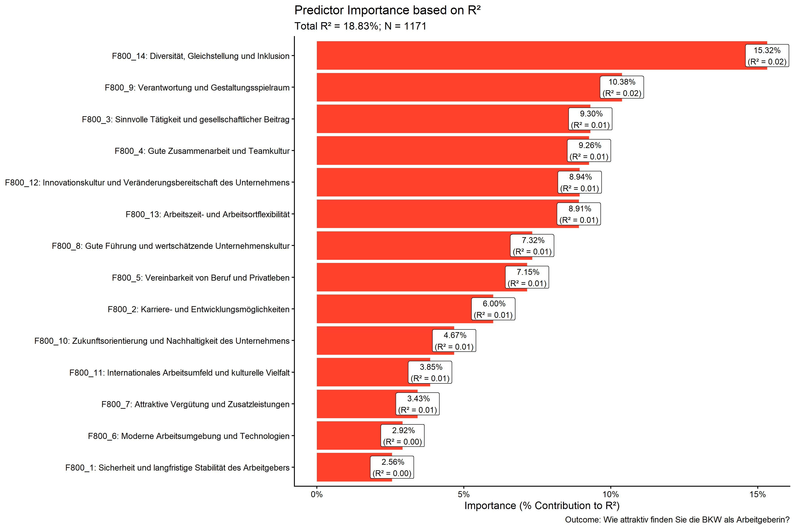
kda_bin$plots$performance_barPlot
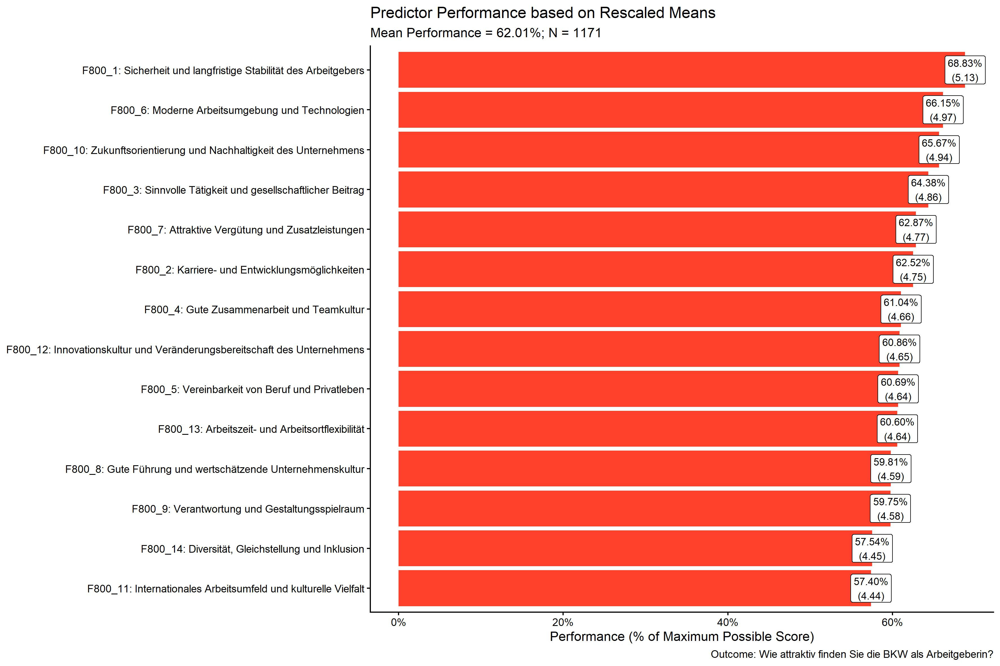
kda_bin$plots$ipma_scatterPlot
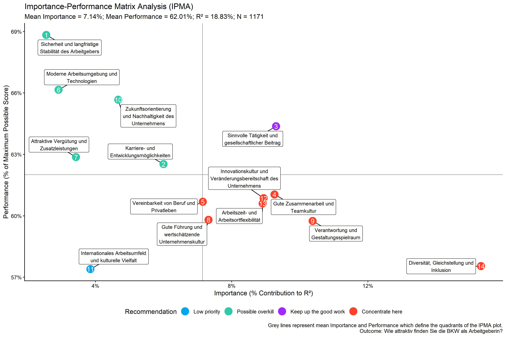
Pro tip: If you prefer to get the forest plot in a Odds-Ratio format instead of Log-Odds, you can use:
kda_forestPlot(
model = kda_bin$model$model,
model_parameters_args = list(exponentiate = TRUE)
)$p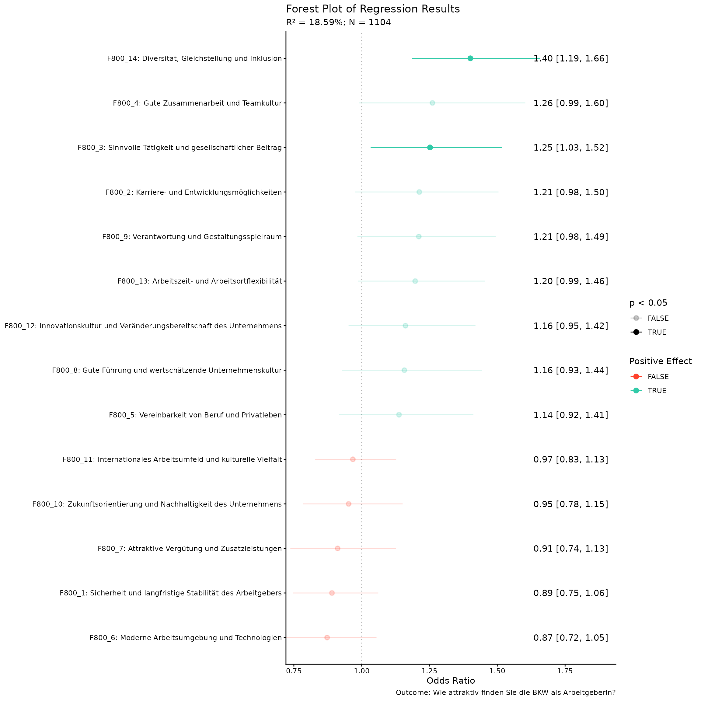
In this case, the interpretation of the forest plot changes slightly. An Odds-Ratio greater than 1 indicates that higher values of the predictor are associated with higher odds of the outcome being 1 (i.e., the event of interest), while an Odds-Ratio less than 1 indicates that higher values of the predictor are associated with lower odds of the outcome being 1. An Odds-Ratio of exactly 1 indicates no association between the predictor and the outcome. For example, an Odds-Ratio of 1.5 would indicate that a one-unit increase in the predictor is associated with a 50% increase in the odds of the outcome being 1, while an Odds-Ratio of 0.7 would indicate that a one-unit increase in the predictor is associated with a 30% decrease in the odds of the outcome being 1.
2.3 Charts for PowerPoint Reporting
YouAnalyser includes functions to facilitate the
creation of an IPMA chart for reporting in PowerPoint.
First, we need to save the IPMA plot data in an Excel file with the
right structure for reporting. We can do this using the
kda_save_data_for_chart() function, which takes the IPMA
scatter plot data and saves it to an Excel file. You can choose the file
path interactively using the ya_choose_file_path()
function.
file_path <- ya_choose_file_path("ipma_data.xlsx")
kda_save_data_for_chart(
ipma_scatterPlot_data = kda$plots$ipma_scatterPlot$d,
file_path = file_path
)This will result in a file that looks like this when opened in Excel:
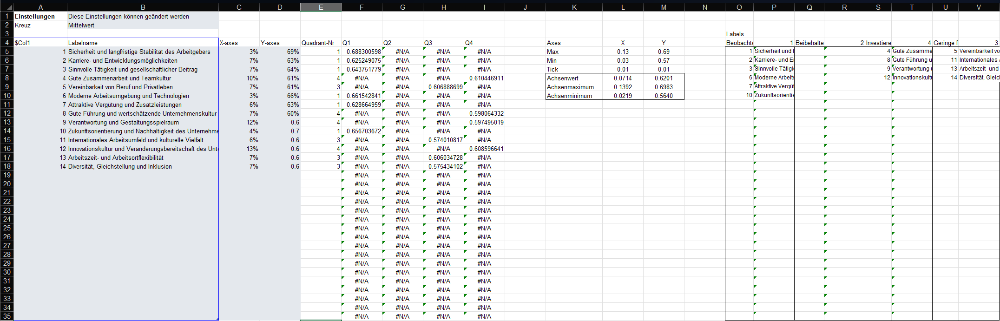
This file has the right structure and contains all the information
needed to update a pre-formatted PowerPoint template that you can use
for reporting. You can copy the PowerPoint template to your desired
location using the kda_copy_pptx_template() function:
file_path <- ya_choose_file_path("ipma_chart.pptx")
kda_copy_pptx_template(file_path)Follow these steps to update the PowerPoint template with the exported data:
- Open the ipma data saved in the Excel,
i.e.
ipma_data.xlsxin this example. - Select the data in the grey box, i.e. A5:D18 in this example, and copy it (Ctrl + C).
- Open the PowerPoint template, i.e.
ipma_chart.pptxin this example. - Go to the slide with the IPMA chart, right-click on the chart, and select “Edit Data” > “Edit Data in Excel”. This will open the “Chart in Microsoft PowerPoint” window, which looks just like Excel.
- In the “Chart in Microsoft PowerPoint” window, select the Cell A5, right-click, and paste values only (Ctrl + Shift + V). The chart in the PowerPoint will automatically update based on the pasted data. You can close the “Chart in Microsoft PowerPoint” window after pasting the data.
- In the IPMA chart, we need to update part of the chart that is
displayed as well as the cross defining the quadrants. For this, arrange
the PowerPoint (
ipma_chart.pptx) and the Excel (ipma_data.xlsx) window side by side.- Double-click on the horizontal line in the PowerPoint chart. This will open the “Format Axis” pane on the right-hand-side (see screenshot below). Copy and paste (Ctrl + C and Ctrl + V) the value in Cell L10 of the Excel sheet (X-Achsenminimum) to the “Bounds: Minimum” field in the “Format Axis” pane. Now copy and paste the value in Cell L9 (X-Achsenmaximum) to the “Bounds: Maximum” field in the “Format Axis” pane. Finally, copy and paste the value in Cell L8 (X-Achsenwert) to the “Vertical axis crosses: Axis value” field in the “Format Axis” pane.
- Double-click on the vertical line in the PowerPoint chart. This will open the “Format Axis” pane on the right-hand-side. Copy and paste (Ctrl + C and Ctrl + V) the value in Cell M10 of the Excel sheet (Y-Achsenminimum) to the “Bounds: Minimum” field in the “Format Axis” pane. Now copy and paste the value in Cell M9 (Y-Achsenmaximum) to the “Bounds: Maximum” field in the “Format Axis” pane. Finally, copy and paste the value in Cell M8 (Y-Achsenwert) to the “Horizontal axis crosses: Axis value” field in the “Format Axis” pane.
- Update the right-hand side legend of the chart with the item numbers and statements. Use the information summarised in the Excel file in O5:V35 to do this.

2.4 Importance Methods
There are three methods available for calculating variable importance
in the kda_regression() function:
-
"domir"Dominance Analysis: This method decomposes the R-squared of the regression model into contributions from each predictor variable. It provides a comprehensive measure of variable importance but can be computationally intensive for models with many predictors. This method is also known as Relative Importance, LMG or Shapley Value Decomposition. -
"jrw"Johnson Relative Weights: Similarly to dominance analysis, this method decomposes the R-squared of the regression model into contributions from each predictor variable. However, it does so using a heuristic method that is computationally more efficient and can handle models with a larger number of predictors. -
"sumOfCoefficients"Sum of Absolute (Standardized) Coefficients: This method calculates variable importance by taking the sum of the absolute values of the (standardized) regression coefficients for each predictor variable. This is a simpler and more computationally efficient method, but it does not account for the intercorrelations between predictors and may not provide as accurate a measure of variable importance as the other two methods. It is included for legacy reasons and is not recommended for use in most cases.
Note that the default method is set to "auto", which
will automatically choose between "domir" and
"jrw" based on the number of predictors in the model. If
you have fewer than 15 predictors, it will use "domir". If
you have 15 or more predictors, it will use "jrw". Set the
importance_method argument to one of the three methods
above to override the default behavior and specify a method
directly.
For an extended discussion of the Dominance Analysis and Johnson Relative Weights methods, please refer to the subsections at the end of this vignette. They are inteded for interested readers or as a reference if clients want to know more about the methods used in the KDA. For additional ressources, please refer to the following resources:
- Vignette of the
domirpackage: https://cran.r-project.org/web/packages/domir/vignettes/domir_basics.html - Technical paper for the Dominance Analysis Method: Grömping, Ulrike. 2007. Estimators of Relative Importance in Linear Regression Based on Variance Decomposition. The American Statistician 61 (2): 139–47. https://doi.org/10.1198/000313007X188252.
- Technical paper for the Johnson Relative Weights Method: Johnson, J. (2000). A heuristic method for estimating the relative weight of predictor variables in multiple regression. Multivariate Behavioral Research, 35, 1–19 . https://doi.org/10.1207/S15327906MBR3501_1
2.5 Model Diagnostics
A short note on model diagnostics. The plot
kda$plots$diagnostics_modelcan also be computed like
this:
diagnostics <- performance::check_model(kda$model$model)
print(diagnostics)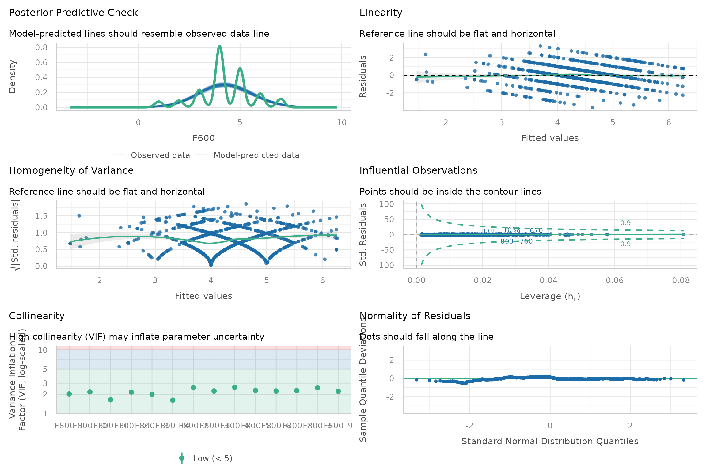
This gives you the advantage that you can also access infomation that can be helpful to interpret the plot, e.g.:
diagnostics$OUTLIERS
#> OK: No outliers detected.
#> - Based on the following method and threshold: cook (1).
#> - For variable: (Whole model)Please refer to the following documentation for more information on how to interpret the diagnostic plots and what you can do if the assumptions underlying the regression model are violated: Checking model assumption - linear models.
3. Scaling KDA for Multiple Groups
You may find yourself in a situation where you want to conduct the
same KDA for multiple groups in your data, e.g. for different
demographic subgroups or segments. In this case, you can use the
kda_regression() function in combination the looping
functions from the purrr package, most notably with
purrr::map(). Let’s walk through an example of how to do
this.
Let’s suppose our participants belong to different segments defined
beforehand, and we want to conduct a KDA for each segment separately. We
can do this by splitting our data into a list of data frames, where each
data frame corresponds to a segment, and then applying the
kda_regression() function to each data frame in the list
using purrr::map().
In the bkw_synthetic dataset, we have a variable called
clusterthat contains the segment membership of each
participant:
# Inspect the value labels of the variable "cluster"
sjlabelled::get_labels(bkw_synthetic$cluster) |>
tibble::enframe(name = "value", value = "label")
#> # A tibble: 6 × 2
#> value label
#> <int> <chr>
#> 1 1 Cluster 1: Betrieb, Installation & Instandhaltung von Anlagen und Netzen
#> 2 2 Cluster 2: Planung, Projektierung, Engineering, Architektur & Bauplanung
#> 3 3 Cluster 3: Energie-, Finanz- & Commodity-Handel / Trading & Marktsteuer…
#> 4 4 Cluster 4: IT, Software, Daten & digitale Lösungen
#> 5 5 Cluster 5: Support- & Querschnittsfunktionen
#> 6 6 Cluster 6: Early Careers
# Inspect the distribution of participants across segments:
datawizard::data_tabulate(bkw_synthetic$cluster, remove_na = TRUE)
#> Cluster (bkw_synthetic$cluster) <numeric>
#> # total N=1216 valid N=1216
#>
#> Value | N | Raw % | Valid % | Cumulative %
#> ------+-----+-------+---------+-------------
#> 1 | 146 | 12.01 | 12.01 | 12.01
#> 2 | 202 | 16.61 | 16.61 | 28.62
#> 3 | 98 | 8.06 | 8.06 | 36.68
#> 4 | 270 | 22.20 | 22.20 | 58.88
#> 5 | 229 | 18.83 | 18.83 | 77.71
#> 6 | 271 | 22.29 | 22.29 | 100.00
# Note: there is also a variable "country". We can use datawizard::data_tabulate()
# to quickly inspect cross-tabulations:
datawizard::data_tabulate(
bkw_synthetic$cluster,
by = bkw_synthetic$country,
remove_na = TRUE
)
#> bkw_synthetic$cluster | CH | DE | Total
#> ----------------------+-----+-----+------
#> 1 | 117 | 29 | 146
#> 2 | 141 | 61 | 202
#> 3 | 74 | 24 | 98
#> 4 | 177 | 93 | 270
#> 5 | 195 | 34 | 229
#> 6 | 151 | 120 | 271
#> ----------------------+-----+-----+------
#> Total | 855 | 361 | 1216The trick is now to devide the data into smaller subsets for each
segment using tidyr::nest(), which creates a list-column
containing the data frames for each segment. We can then apply the
kda_regression() function to each data frame in the list
using tidyr::map(). Here’s how to do this:
# Split the data into a list of data frames, one for each segment.
bkw_by_segment <- bkw_synthetic |>
tidyr::nest(.by = cluster) |>
dplyr::arrange(cluster) # Arrange by cluster for cosmetic reasons.
# Note how "data" now in each row contains an entire data frame for the
# respective segment:
print(bkw_by_segment)
#> # A tibble: 6 × 2
#> cluster data
#> <dbl+lbl> <list>
#> 1 1 [Cluster 1: Betrieb, Installation & Instandhaltung von Anlagen und… <tibble>
#> 2 2 [Cluster 2: Planung, Projektierung, Engineering, Architektur & Bau… <tibble>
#> 3 3 [Cluster 3: Energie-, Finanz- & Commodity-Handel / Trading & Markt… <tibble>
#> 4 4 [Cluster 4: IT, Software, Daten & digitale Lösungen] <tibble>
#> 5 5 [Cluster 5: Support- & Querschnittsfunktionen] <tibble>
#> 6 6 [Cluster 6: Early Careers] <tibble>
# purrr::map() applies a function to each element of a list. In this case, we
# apply the kda_regression() function with a specific set of arguments to each
# data frame in the "data" column. The only thing that changes across iterations
# is the data frame that is used as input. To make make the following code easier
# to read, we define a temporary function called "my_kda_function" that takes a
# data frame as input and applies the kda_regression() function to it with the
# specified arguments. We then pass this function to purrr::map() to apply it to
# each data frame in the "data" column.
# Helper function
my_kda_function <- function(df) {
kda_regression(
data = df,
outcome = "F600",
predictors = paste0("F800_", 1:14),
importance_method = "jrw",
diagnostics = TRUE
)
}
# Apply helper function to each data frame in the "data" column using purrr::map()
bkw_kda_by_segment <- bkw_by_segment |>
dplyr::mutate(kda_result = purrr::map(data, my_kda_function))
# Note how we added the column "kda_result" which now contains the KDA results
# for each segment:
print(bkw_kda_by_segment)
#> # A tibble: 6 × 3
#> cluster data kda_result
#> <dbl+lbl> <list> <list>
#> 1 1 [Cluster 1: Betrieb, Installation & Instandhaltung vo… <tibble> <named list>
#> 2 2 [Cluster 2: Planung, Projektierung, Engineering, Arch… <tibble> <named list>
#> 3 3 [Cluster 3: Energie-, Finanz- & Commodity-Handel / Tr… <tibble> <named list>
#> 4 4 [Cluster 4: IT, Software, Daten & digitale Lösungen] <tibble> <named list>
#> 5 5 [Cluster 5: Support- & Querschnittsfunktionen] <tibble> <named list>
#> 6 6 [Cluster 6: Early Careers] <tibble> <named list>All results for each segment are now stored in the
kda_result column of the bkw_kda_by_segment
data frame. You can access the results for each segment using
dplyr::filter(), dplyr::select() and
purrr::pluck(). For example, to access the KDA results for
the sixth segment, you can do:
cluster6_ipma_ScatterPlot <- bkw_kda_by_segment |>
dplyr::filter(cluster == 6) |>
dplyr::select(kda_result) |>
purrr::pluck(1, 1, "plots", "ipma_scatterPlot", "p")
print(cluster6_ipma_ScatterPlot)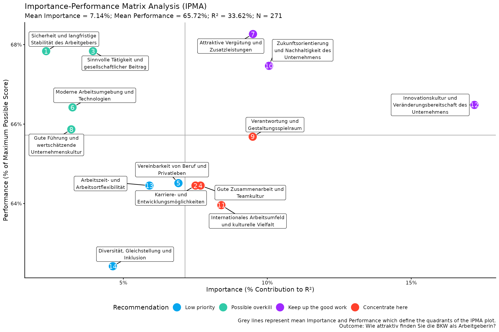
If you would like to save all IPMA scatter plots for each segment,
you can do this using purrr::iwalk(), which allows you to
iterate over the rows of the bkw_kda_by_segment data frame
and save the IPMA scatter plot for each segment using the
ya_save_plot() function. Here’s how to do this:
# Choose the output folder interactively. You can also specify a path directly
# as a string, e.g. "C:/Users/YourAbbreviation/Downloads/"
my_output_folder <- tcltk::tk_choose.dir()
# Iterate over the rows of the bkw_kda_by_segment data frame and save the IPMA
# scatter plot for each segment.
purrr::walk2(
.x = bkw_kda_by_segment$kda_result,
.y = bkw_kda_by_segment$cluster,
.f = \(kda_result, cluster) {
ipma_plot <- kda_result$plots$ipma_scatterPlot$p
cluster_id <- as.integer(cluster)
ya_save_plot(
plot = ipma_plot,
file_path = paste0(
my_output_folder,
"/segment_",
cluster_id,
"_ipma_scatterPlot.jpeg"
),
width = 30,
height = 20,
verbose = FALSE
)
}
)As a final note: Please be aware that results for subgroups should only be interpreted if the sample size for the subgroup is sufficiently large. If the sample size is too small, the results may be unstable and not generalizable to the population of interest. There is no hard rule for what constitutes a “sufficiently large” sample size, as it depends on various factors such as the number of predictors in the model, the expected effect sizes, and the desired level of statistical power. However, as a general guideline, it is often recommended to have at least 10-15 observations per predictor variable in the model for reliable estimation. Therefore, if you have a model with 14 predictors, you would ideally want at least 140-210 observations in each subgroup to ensure stable and interpretable results.
Extended Discussion of Importance Methods
Dominance Analysis
Practical relevance
In many applied regression settings—particularly with observational data—predictors are correlated, making it unclear how much each predictor truly contributes to the model. Standard regression outputs (e.g., standardized coefficients, partial , or -statistics) depend on the specific set of covariates included and can change dramatically under multicollinearity. As a result, they often provide unstable or misleading assessments of predictor importance.
Dominance analysis addresses this problem by evaluating predictor importance across all possible regression models, rather than conditioning on a single model specification. By averaging each predictor’s contribution to explained variance across all relevant contexts, dominance analysis provides an importance measure that fully reflects both unique and shared effects among correlated predictors. This makes it especially useful when the goal is to interpret relative contributions rather than to select a parsimonious prediction model.
In practice, dominance analysis is often viewed as a reference or gold‑standard method for relative importance, against which more computationally efficient approaches can be compared.
Methodology
Dominance analysis defines the importance of a predictor as its average marginal contribution to across all subset models in which it appears.
Formally, for each predictor :
- All possible subsets of the remaining predictors are considered.
- For each subset , the increase in explained variance, is computed.
- These incremental contributions are averaged over all subsets, yielding a non‑negative importance value for .
The resulting dominance statistics sum exactly to the total model and can be expressed as percentages of explained variance. Dominance analysis is mathematically equivalent to the LMG / Shapley value decomposition of , ensuring a fair and order‑independent allocation of shared variance. Its principal drawback is computational complexity, as the number of subset models grows exponentially with the number of predictors.
Johnson’s Relative Weights (JRW)
Practical relevance
Relative weights analysis was developed to solve the same interpretational problem as dominance analysis—namely, how to allocate explained variance among correlated predictors—but in a way that is computationally feasible for larger models. In real data, predictors frequently measure overlapping constructs, and treating them as if they compete for variance (as regression coefficients do) can exaggerate differences or produce suppressor effects that are difficult to interpret.
Johnson’s relative weights redistribute explained variance so that predictors which are conceptually similar and similarly related to the outcome receive similar importance estimates, even when strongly correlated. This aligns well with how applied researchers and stakeholders typically think about importance (e.g., “Which inputs matter most overall?”).
As such, relative weights are particularly useful when: - predictors are moderately to highly intercorrelated, - the focus is on explaining variance, not selecting variables, and - clear, stable importance estimates are needed for communication or reporting.
Methodology
Johnson’s relative weights method estimates each predictor’s contribution to by combining orthogonalization with variance reallocation.
The procedure can be summarized in four steps:
Orthogonalization of predictors
The correlated predictors are transformed into a set of uncorrelated variables using a least‑squares orthogonalization based on the eigenvalue decomposition of the predictors’ correlation matrix. This transformation yields orthogonal variables that are maximally similar to the original predictors.Regression on orthogonal variables
The outcome is regressed on the orthogonal predictors. Because these predictors are uncorrelated, each squared standardized coefficient represents the portion of attributable to that orthogonal component.Mapping variance back to original predictors
Each orthogonal variable is expressed as a linear combination of the original predictors. The variance explained by each orthogonal component is then partitioned among the original predictors according to their squared correlations with that component.Computation of relative weights
A predictor’s relative weight is obtained by summing its allocated contributions across all orthogonal components. The resulting weights are non‑negative and sum exactly to , and are typically reported as percentages of explained variance.
Empirically, Johnson showed that these relative weights closely approximate dominance analysis results, especially for moderate correlations, while requiring far less computation.
Summary comparison
Both dominance analysis and Johnson’s relative weights address the interpretational ambiguity caused by correlated predictors: dominance analysis does so exactly by averaging contributions across all subset models, whereas Johnson’s relative weights provide a computationally efficient approximation that yields very similar and practically interpretable results.